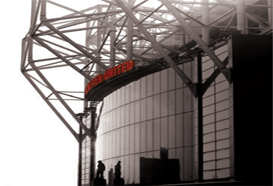

GLORY OF MANCHESTER UNITED

Enlarge Image++
GLORY
Founded in 1878 as Newton Heath L&YR Football Club, our club has operated for over 136 years.
The team first entered the English First Division, then the highest league in English football,
for the start of the 1892-93 season. Our club name changed to Manchester United Football Club in 1902, and we won the first of our 20 English League titles in 1908. In 1910,
we moved to Old Trafford, our current stadium.

Late 1940's
1958
1986
2012-13
2014